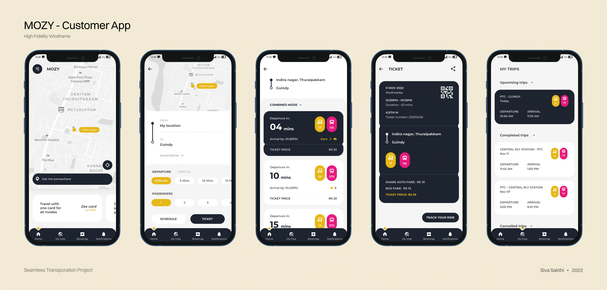
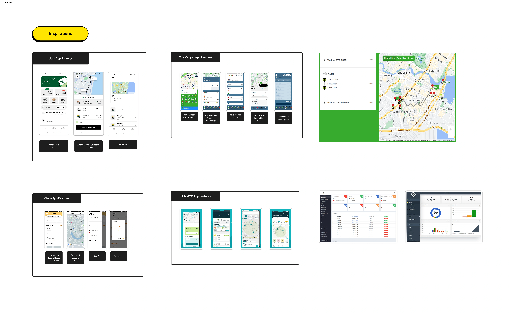
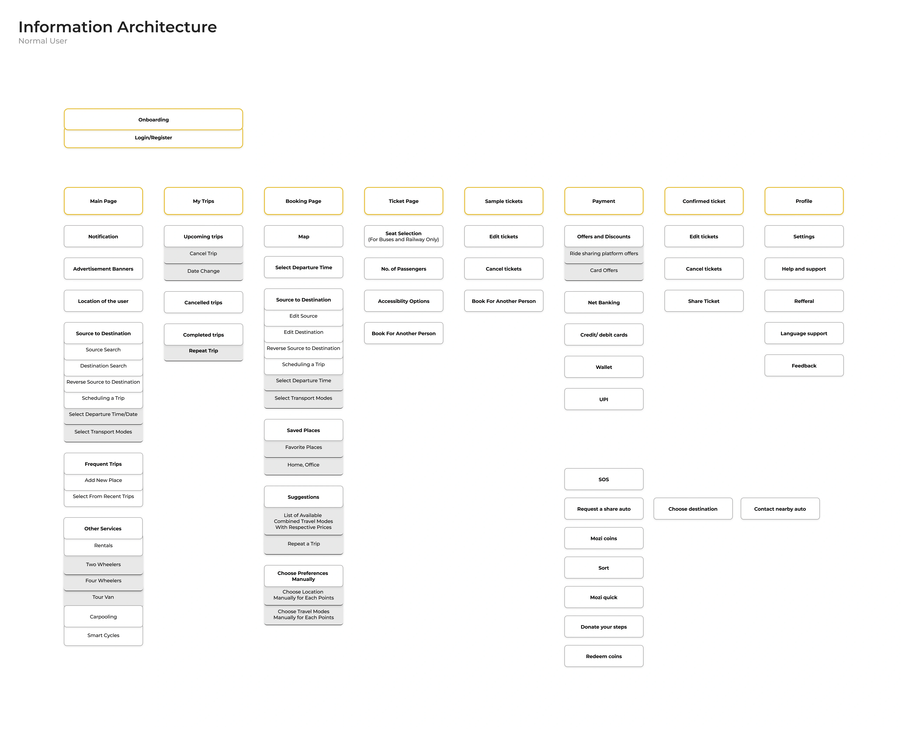
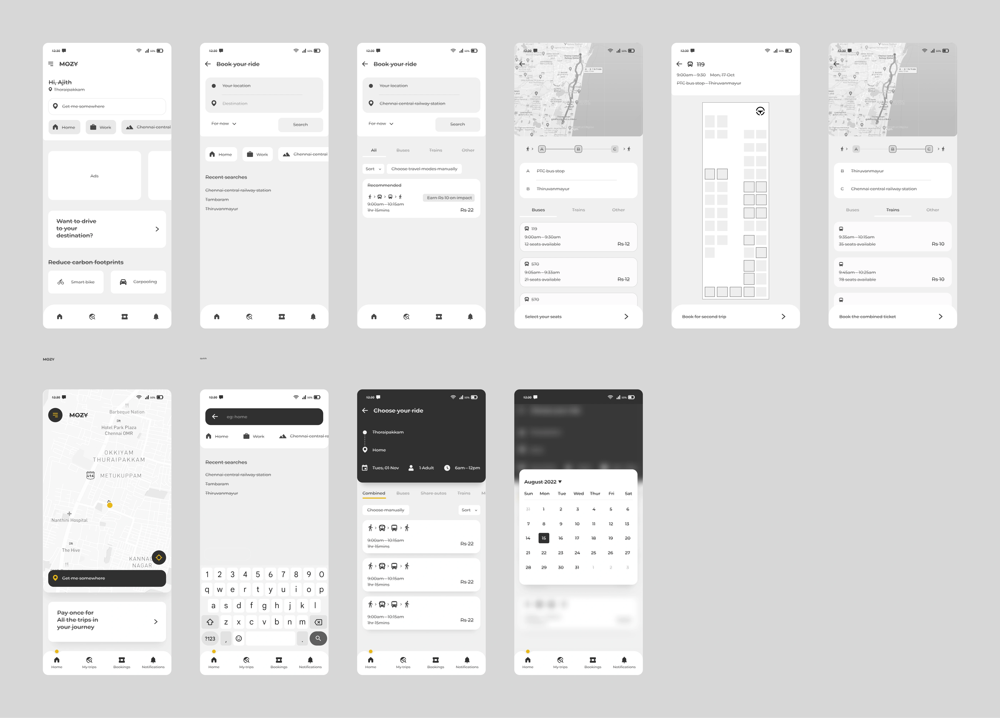
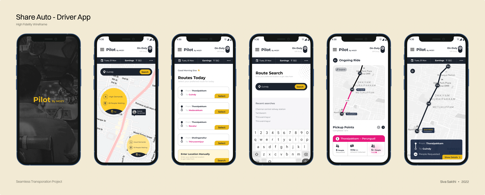

Seamless Transportation/Mobile · iOS/2022
MOZY, clarity for a chaotic commute.
A research-first mobile app designed to bring clarity, dignity, and intelligence to India's urban commute, from stakeholder interviews to hi-fi delivery in under four weeks.

My first UX project. Messy. Overdone. Always trying to understand.
This was the first ever UX case study I worked on, as part of a team of three at UXMINT Academy, Chennai. We were Siva (me), Ajith, and Hema. Honestly, we didn't know what "good process" looked like yet, so we did everything we could.
We were given a series of problem-statement titles to choose from. Seamless Transportation stuck. We put ourselves into the UX process and started from scratch, not because we knew the right way, but because we were determined to figure it out.
We ran a mock stakeholder interview, dug into secondary research, spoke to 10+ real people, mapped entire systems, built IA diagrams, wireframed every core flow, and delivered a high-fidelity mobile product, all in three to four weeks. And somewhere along the way, I had a breakthrough idea I built completely on my own.
My contributions
Full process: research → synthesis → IA → wireframes → hi-fi.
System thinking, root-cause mapping, insight documentation.
Built the core mobile product equally with Ajith.
Independently conceptualised and designed from concept to hi-fi UI.
From a problem statement to a product that thinks.
We built MOZY the slow way, starting with real-world observation, moving through structured research, and arriving at pixels only when every decision had earned its place.
Stakeholder Interview
Mock session with Mr. Kingsley, learning to ask for the right signals without leading.
Secondary Research
Mapping transport across India and globally, MTC, Metro, Ola, share autos, CMBT, international benchmarks.
User Interviews
10+ qualitative sessions and quantitative surveys, real commuters, real friction.
IA + Wireframing
Paper before pixels, IA diagrams and lo-fi flows to validate hierarchy first.
Hi-Fi Design
A complete mobile product built for real Indian commute conditions.
We didn't guess. We went and looked.
Research wasn't a checklist, it was the only thing standing between bad assumptions and real understanding. We ran three distinct phases, each building on the last.
The mock stakeholder meeting
We ran the full process, from an understanding document to a structured questionnaire to a live mock interview with Mr. Kingsley, Founder of UXMINT Academy.
The goal wasn't to get requirements. It was to learn how to ask for the right signals without leading the conversation. For most of us it was our first formal stakeholder interview, and it immediately showed how different real conversations are from assumption-filling exercises.
"The goal wasn't to get requirements, it was to learn how to ask for the right signals without leading the conversation."
Structured questionnaire
Questions designed to surface business intent, user needs, and system constraints, without telegraphing answers.
Interview with Mr. Kingsley
Ran the session end-to-end. Captured signals, noted follow-ups, surfaced assumptions to validate later.
Understanding document
Everything documented and ready to brief the team, the foundation every later decision built on.
Mapping the whole system first
Before talking to a single user, we benchmarked the landscape, MTC buses, Ola, Rapido, Metro Rail, share autos, CMBT operational data, and comparable international solutions from the UK, Singapore, and Edinburgh.
We tracked initiatives, policy changes, and innovation in transport technology. Secondary research gave us context interviews alone never could, and prevented us from designing in a vacuum.

10+ people. Real stories. Diverse friction.
We moved into primary research, not as a checklist, but to reduce assumptions. We spoke to 10+ people, identified their user category, and asked questions built around qualitative goals. Since this was our first exposure to face-to-face interviews, the data was messy and diverse, but the stories were real. We also collected quantitative data through Google Forms.

Looking at what already existed, and why
We analysed competitor apps and international platforms, not to copy, but to understand what decisions had been made and why. We studied Uber, Ola, Citymapper, TUMMOC, and Rapido, extracting how each handled key moments: route search, booking confirmation, live tracking, multi-modal navigation.
The goal was to surface patterns that genuinely worked, and to separate good design from accepted convention.

Across completely different users, the same friction appeared.
Six friction points surfaced consistently, across daily commuters and occasional riders, bus users and auto users. Not isolated complaints. A convergent pattern.
Seat uncertainty
No way to know if a seat existed until physically arriving at the stop, creating anxiety-driven over-planning and redundant trips.
Timing unpredictability
No reliable ETA across public transport. People arrived early or late because no signal told them when to leave.
Last-mile dependency
Getting from a stop or station to the destination required switching modes, with zero digital support.
Overcrowding
Peak-hour routes saw extreme crowding, not from insufficient vehicles, but because demand wasn't distributed.
Lack of system visibility
The transport system was invisible. No way to see what was available, full, or delayed before committing.
Accessibility gaps
Digital tools were inaccessible to many, by language, limited digital literacy, or physical access constraints.
Every problem wasn't isolated, they were connected. Which meant a feature list wasn't going to fix this. Only systems thinking would.
This is not a UI problem. Not even a single-product problem. This is a system problem.
Initially, like most beginners, we thought: let's design a better booking experience. But the deeper we went, the clearer it became, different transport modes exist, work independently, but don't talk to each other. Because of that, every user is forced to do all the heavy lifting themselves.
Breaking observations down into structure.
Instead of jumping to solutions, we paused and mapped. We broke transportation into six distinct layers, then studied how each failed users independently, and worse in combination.
Government Systems
MTC, Metro, govt-operated transit.
Private Operators
Share autos, private buses, local services.
Ride-Sharing Platforms
Ola, Rapido, Uber.
Rental Services
Two-wheelers, four-wheelers, corporate pools.
Payment Systems
Cash, UPI, wallets, tokens, all separate.
Physical Infrastructure
Stops, roads, last-mile access points.

One root cause. Multiple directions pointing to it.
We ran a systematic breakdown of transport failures into root causes. One surfaced repeatedly, from every direction: crowd management.
"This was probably the first time I truly experienced: design is about reducing complexity, not adding features."
Every screen connected back to a research insight.
With research synthesised, we built the IA, mapped features, and moved into wireframes. Each feature had to earn its place by solving a specific, documented problem.

Lo-Fi wireframes, getting the logic right
We built low-fidelity wireframes covering the homepage, source-to-destination planning, transport combinations, live tracking, and ticketing. First we planned every feature; then we stripped back to the core: "book and reach a destination seamlessly."
The wireframe phase was the most efficient part of the process, faster critique, faster rejection of bad ideas, better alignment before any visual decisions.

Hi-Fi design, two colours, zero ambiguity
The MOZY design system was built around a functional truth: yellow on black is readable in bright Indian sunlight, on cracked screens, with glare. The brand identity wasn't aesthetic, it was earned by asking what colour works in the conditions of use.
Every visual decision was anchored in research, map-first layout, fare shown upfront, smart filters, single-scroll ride options, certainty-first confirmation states.
An insight from the commute, not the whiteboard.
I commute through Chennai. Share-autos are everywhere, informal pooled auto-rickshaws running fixed routes for flat fares. Efficient, affordable, deeply embedded in the city's mobility fabric. But entirely invisible to the digital world. No apps. No tracking. No pooling signal.
The root cause we identified, crowd management, had been about buses. But the real crowd problem in Chennai is that people don't know where demand is clustering. That's where the share-auto idea came from.
I designed this feature independently, from the conceptual model to the user flow, IA, and full hi-fi UI. The driver flow was designed for a 40-second setup, because if it takes longer, an auto driver pulling away from a stand simply won't do it. The passenger flow requires no account creation at all.
One tap on a map signals "I'm here, I need a share-auto." No booking, no app install. Just a presence signal, the system does the rest.
Before starting, a driver sets their home route. The map shows pooling density along their path in real time, so they know where demand exists and can optimise.

Drivers choose flexible directions, not fixed routes.
Users signal intent with a single tap on the map.
Demand clusters naturally along active corridors.
Drivers respond to where people actually are.
Signals fade as autos pick up passengers, a self-healing system.
Zero account creation required for passengers.
"It digitises an informal system without making it unrecognisable.", On the Share-Auto pooling feature, MOZY 2022
What I'd do differently today. What I'd never change.
Looking back, I see it clearly: we tried to solve everything. That's rarely how real products succeed, but trying to was the best teacher I've had.
Narrow it to a sharper MVP
We tried to solve every problem we found. Great system thinking, but a product that tried to be an entire category. One use-case done exceptionally would have been far more powerful.
Validate assumptions with real users
We built from patterns but didn't go back to test our solutions. Closing that loop from insight to design to validation is something I'd build in from day one now.
Focus deeply on one use-case
MOZY tried to cover buses, autos, metro, rental, payments, and pooling in one product. That's a category, not a product. Depth over breadth, always.
Simplify before scaling
The system thinking was good, but complexity should stay invisible. It should power simplicity, not mirror it. The hardest and most valuable lesson.
Research-first posture
Not starting from assumptions. That discipline produced every good insight we had, and it's now baked into how I work.
Paper before pixels
The wireframe phase was the most efficient part, faster exploration, faster rejection of weak ideas, better alignment.
Following real curiosity
The Share-Auto idea came from living in the city. Following that thread independently is something I'd do again without hesitation.